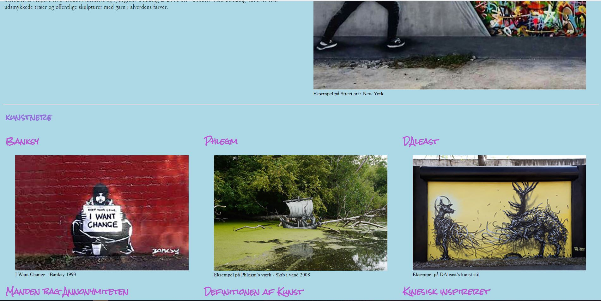

TEMA 1 - CONTENT
Til dette tema har jeg arbejdet med basic web-design, og hvordan man sætter internet sider op.
Til dette har jeg lavet et website, over flere itterationer, som jeg nu vil vise her.
Itteration 1
Her ser vi mit første udkast til mit website med basisk HTML i brug. Læg mærke til manglen på paddig, margen, farver, fonte og almene design nødvendighedder.
Dette første site bruger kun flex-box til at få indholdet til at stå bare lidt fornuftigt. Men billeder står ikke rigtigt, og flexbox værdierne der gør at tingene står lige er ikke benyttet.
Itteration 2
Her ser vi hvordan siden forbedres. Farve, fonte, or orden i de forskellige segmenter.
Fontene er blandet mellem woff filer så de er en del af websitet, og nogle af dem er fra google fonts.
F.eks er fontene brugt på dette website til eksamen er fra google, og er linket via der.
Itteration 3

Dette er det endelige site: Her er der så kommet farver på, h1'erne og h2'erne har fået deres individuelle farver, og det hele har det her pastel farve.
Det kan så diskuteres om hvorvidt dette er farver der passer til en lyseblå baggrund, men her kan man se et eksempel på noget jeg har rykkket mig væk fra.
Desuden er der kommet margin og padding på de fleste elementer, således at der er meget mere luft mellem tekst blokkene og eventuelle kanter.
Så hvad har jeg lært?
Meget af det blev lavet i dette tema var kode, men også opsætning, og design. Dette kulminerede i nogle færdighedder, som kan bruges på tværs af temaerne. Desuden har det hjulpet meget at få et "øje" for godt design og sørge for alt står som det skal.
Færdighedder jeg har lært:
- Basic HTML (div tags, nav, head, p, ul, li, og mange mange flere)
- Flexbox og dets egenskaber (align items, justify content, display flex, og flex wrap. Desuden det hele parent/child forhold)
- CSS (style sheets, klasser, id'er og almen styling)
- Fonte og Import af forskellige filer(Woff filer, billeder, links)
Links til website